Light, in print.
At street scale, Plum reads as one silhouette. In the hand, a brochure can pause on a single glass rib. On a carton, the finish name needs to do the work.

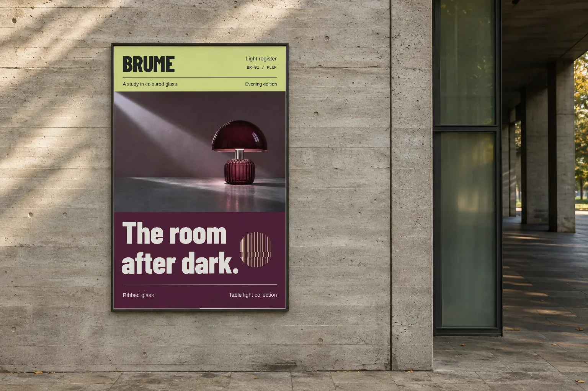

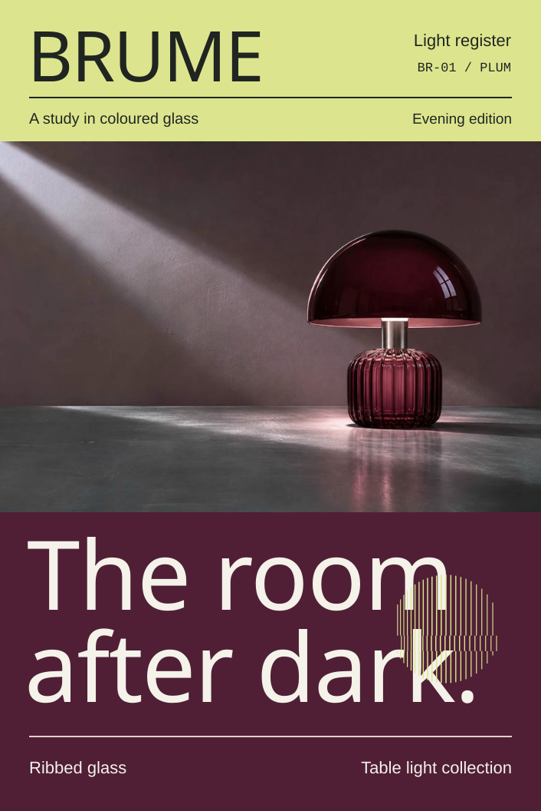
Two reading distances
The two-line headline and clear dome carry the image from a distance. The edition code sits at the top edge for a closer look. The citron strip sets the poster apart from the grey concrete.
Inside the fold.
Turning the page moves from the whole lamp to its two surfaces. The left page isolates the ridges. The right page restores the curve of the shade and names the three finishes.

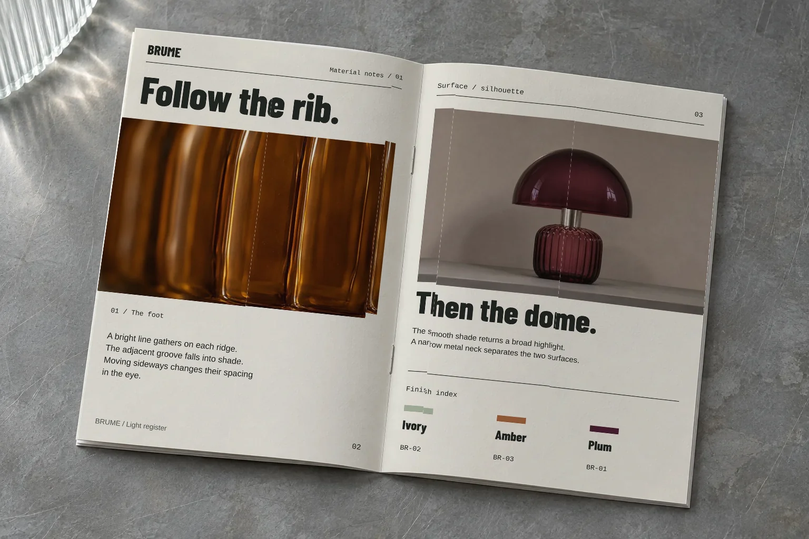

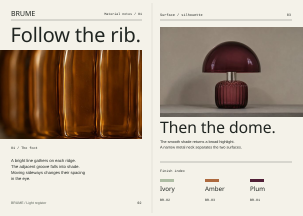

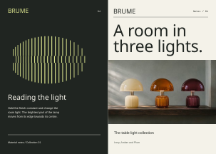
A name on the shelf.
Each box can take the same size of label. A large finish name identifies the edition in words. The small code stays in the same corner. The break in the rib pattern moves lower as the series progresses from morning to evening.

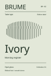

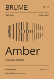

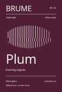
One carton, three editions.
A separate 100 × 150 mm label leaves the board visible around the name. The proposed blank uses four equal-width panels, opposite tuck ends and a single 20 mm glue seam.


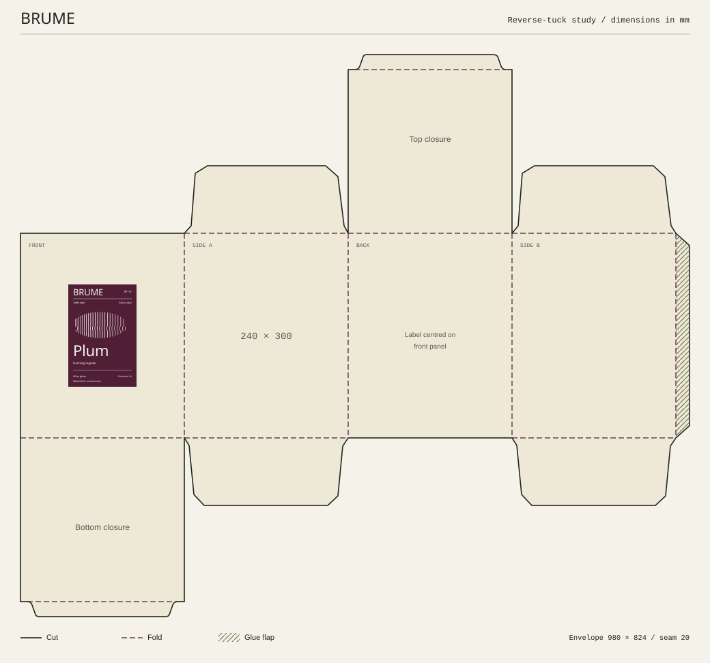
What the net establishes
The scale drawing locates the label on a 240 × 300 mm front face and shows how the outer carton would fold. Product clearance, inserts, board strength and fit would be determined from physical samples.
At arm’s length.
The magazine page introduces Ivory. The postcard follows a shadow off the lamp. The small insert names one construction detail. The sheet keeps all three identifiers beside their finish descriptions.

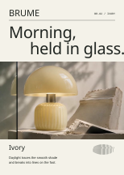

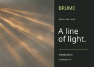

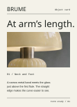

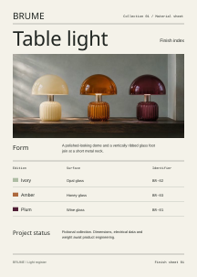
Before the register.
The earlier Plum labels used a circular target. The new front takes its mark from the flutes and gives the finish name the largest line after the mark.


Format notes.
| Piece | Dimensions |
|---|---|
| Street poster | 700 × 1050 mm |
| Brochure, open / closed | 297 × 210 / 148.5 × 210 mm |
| Edition label | 100 × 150 mm |
| Outer carton, proposed | 240 × 240 × 300 mm |
| Magazine ad / finish sheet | A5 / A4 |
| Postcard / product card | A6 landscape / portrait |
The printable flats include 3 mm of bleed. Text stays editable and photographic crops are embedded. The carton net has a separate drawing margin. Board, colour and closures await a physical proof.
Open print specifications